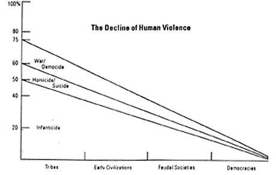
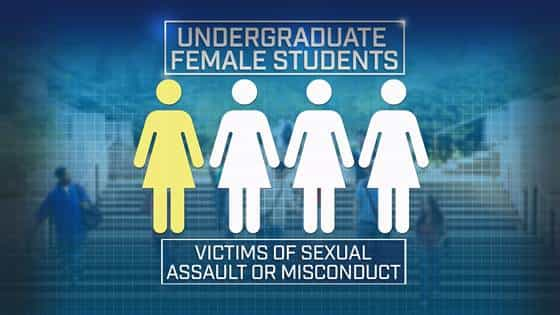
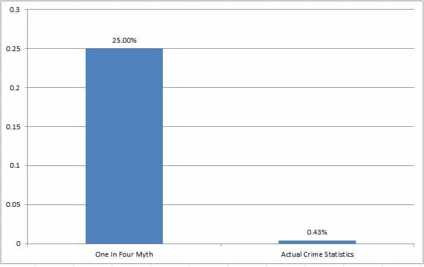
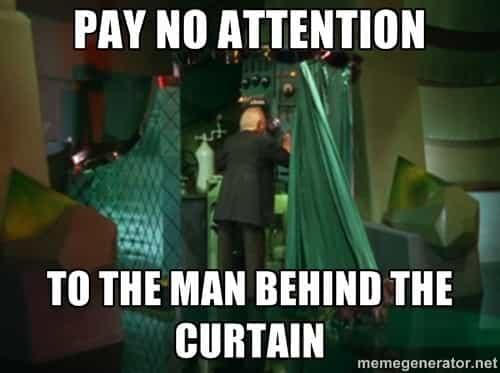
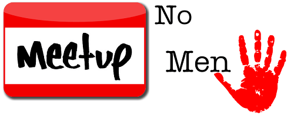
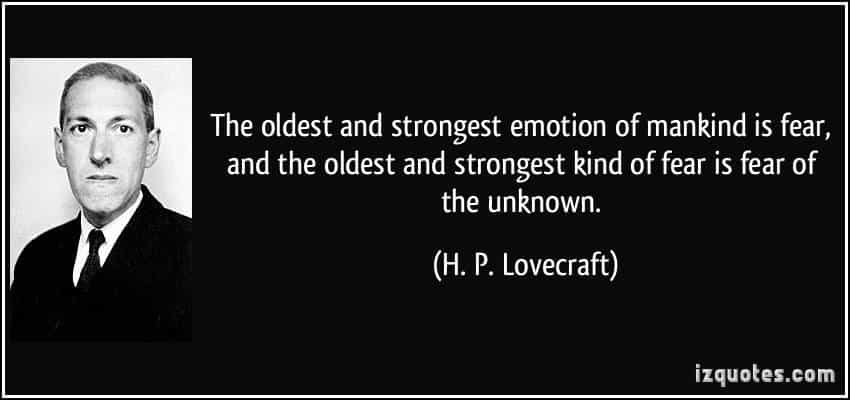

is an aspiring philosopher king, living the dream, travelling the world, hoarding FRNs and ignoring Americunts. He is a European at heart, lover of Latinas, and currently residing in the USA.


The only thing we have to fear, is fear itself — Franklin Delano Roosevelt, US President
Living in 2016 on planet earth is historically the safest time in history. Life expectancies are at record levels. Despite the very real problems of war, poverty, oppression, and inequality that exist today, and that we should all strive to minimize, as Pulitzer prize winning author and Harvard psychology professor Dr. Steven Pinker stated “Today we may be living in the most peaceful era in our species’ existence.” In an excellent TED talk, Dr. Pinker details how society was far more violent, deadly, and dangerous in the past, and over the past 2,000 years there has been a steady increase in living conditions, safety, and peace.

And yet, the news is full of stories of impending danger, threat, and violence. And while there are bad things going on in the world today, while the US is in dire economic conditions, while politicians constantly threaten and scare the public with doomsday scenarios, and while there are armed conflicts going on throughout the world, in the grand scheme of things, life has never been better. And yet many are paralyzed with fear.

Fear of rape, which practically 100% of college age women are exposed to through numerous campus education programs, media, and friends, is far more dangerous to young women than actual rape, which was reported at a rate of 0.02% according to 2013 FBI crime statistics in the USA. But college women are routinely told that as many as “one in four” of them will be a victim of sexual violence, when in fact, the data comes nowhere near that number. And this false statistic has been repeated by trusted authorities and people in positions of power, all the way up to the oval office, with President Obama stating “It is estimated that 1 in 5 women on college campuses has been sexually assaulted…” (Jan 22, 2014).
The Washington Post investigated the source of the “one in five” statistic and found that it came from a flawed 2007 Campus Sexual Assault Study, which had several errors, including a) it paid students for participating, b) the response rate was too low to be statistically meaningful c) only two college campuses were surveyed c) it was a web based survey (web polls are *never* considered scientifically meaningful), d) it encouraged those who were victims to complete the survey, skewing the results, and e) it used a broad definition of harassment which included receiving a kiss you didn’t want (I’m a victim of this atrocity).
Even considering all these flaws, only 6.9% of respondents reported experiencing physically forced sexual assault, which is nowhere near one in five, even of the small sample that logged on to the site.
Christopher Krebs, who led the study for the US Justice Department, stated in a Time magazine article in 2014 that “There are caveats that make it inappropriate to use the 1-in-5 number…”
A followup study was commissioned by the US Justice Department in 2014 to clarify the prior survey. The results painted a far different picture, and one that seems more believable to the casual reader. The rate of rape or sexual assault for college age females (18-24) was about 4.3 per 1,000 in 2013, or 0.4%.

While all women should be aware of the risks of sexual assault, and take steps to prevent it, it is also important not to be paralyzed by fear, and to put the actual risk into perspective. How does the sexual assault risk of ~1 in 230 stack up with some other common fearful things?:
Heart disease: 1 in 5
Getting pregnant from unprotected sex: 1 in 20
Developing skin cancer: 1 in 33
Dying from obesity: 1 in 100
Getting murdered 1 in 200
——————————————————————————–
College age sexual assault 1 in 230
Forced sexual encounter 1 in 4,000
Struck by lightning 1 in 5,500,000
Being killed by terrorism 1 in 20,000,000
Notice a trend here? The items at the top of the list are far more common (and indeed more dangerous—four out of the five will kill you and the fifth results in a serious and permanent life change) and yet are given relatively little emphasis, while the items at the bottom of the list are incredibly rare, and yet everyone knows the steps to take to avoid a lightning strike in a thunderstorm, and anyone who has flown an airplane goes through a rigorous set of security procedures in order to prevent the incredibly rare threat of terrorism.

Of course, this doesn’t mean to throw common sense out the window, and put oneself needlessly at risk, but doesn’t the idea that statistically one out of 4,000 people being forcibly raped make you think a bit different about the risk than if it were one in four? The latter number makes it seem like a very rare instance, one where hopefully no one you know or care about will ever become a victim, whereas the latter makes it sound unavoidable that many women you know have already succumbed to an epidemic of raping.
Yes, it’s true that not all rapes, like not all crimes of any time, are reported. While we cannot know the true level of unreported crimes, logic and reason would dictate that the real number is much closer to 1 in in 4,000 than 1 in 4. (Aside: Anyone who has been a victim of a rape, or any crime, should report the crime to police immediately).
Over the last week, we have seen another illogical and irrational rape fear emerge: the Return Of Kings community has been smeared by SJWs, media, police departments, and a U.S. Governor for an unfounded and completely false claim that it supports rape. ROK created an event where men who enjoy weight lifting, sports, philosophy, women, and socializing could get together and meet others with similar interests in their community—basically a way to make new friends. It was very similar to what the company meetup.com does for thousands of groups throughout the world on a daily basis.

However, the group was smeared as a “rape advocacy” group, based on a single article written by the site’s founder entitled How To Stop Rape (yes, read that again and let it sink in). Somehow, this article was twisted to mean the exact opposite—how to encourage and advocate for rape. The only explanation is that a few powerful people lied and distorted the truth, and this spiraled out of control, as thousands of others parroted these claims without ever investigating them.
At first, I could not believe that anyone could actually believe there was a group of men openly advocating for a violent criminal act, and that it was clear that anyone accusing ROK of supporting rape was an obvious liar. However, when I saw mainstream media reports and front page news stories claiming ROK was a rape advocacy group, and the Des Moines, Iowa police department and Governor of Texas join in the criticism, it was clear this was more than just a case of dishonest false accusations.
People fall easily into the “if I read it online it has to be true” trap, and the Milgram experiment shows how authority figures are given undue levels of trust. What started as a lie, quickly was echoed and repeated until it appeared real.
One of dozens of threats of violence (source: Reddit)
While the ridiculous rape claim has been proven false numerous times, and the article has always remained available for anyone to read, that didn’t stop the situation from spiraling out of control to the level that violent threats were made in dozens of countries to anonymous men who wanted to get together and meet other strangers who share their interests.

One can only speculate on this obscure fixation on rape. Perhaps it was chosen because a rape is one of the worst things that can happen to a woman, and creates strong, immediate visceral reactions, and a rape accusation is a good way to tarnish someone permanently. Perhaps it is because immoral SJWs have unhealthy obsessions with rape and deviant sex. Perhaps the general intelligence has fallen so far that someone actually read the article and concluded it meant How To Encourage Rape.
Perhaps we live in such a safe society, that we must invent faux outrage about things like the type of cups our coffee is served in, what sign to hang on the door of the place we pee and poop, new vocabulary to be used in case we come across rare and almost extinct creatures, or a group of men getting together on a weekend. I think the reason is less important than the goal—preventing men from socializing and bonding together.
I planned on attending, and have no idea what kind of men I would have met. ROK publishes multiple articles every day, and out of the thousand articles published in the last year or so, if I read one I disagreed with, I wouldn’t have judged an entire international audience of strangers based on one thing one of the multiple authors on the site wrote. And yet (setting aside the distortion of the article in question), this is exactly what dozens of media outlets, SJWs, politicians, and ordinary people have done. They acted out of fear.

It’s time to stop being afraid. It’s time to think for yourself. It’s time to ask questions. Does it sound reasonable that a group of people would openly advocate for a violent crime against half the human race? Is this something that can be easily verified? Is making violent threats against anonymous strangers for beliefs that may differ from yours ok? Are we living such safe, stable lives that we must search for or invent fake outrage instead of focusing on personal betterment and being thankful for our safety, health, family, friends, and happiness?
Fear of the unknown is always the most powerful fear. It is why racism, terrorism, religious wars, and politics have created division and conflict for so long. It is easy to hate “them” without ever examining who “they” are. Stop fearing, read the How To Stop Rape article, and after you realize you were lied to, take a look at some of our other articles, and perhaps they will resonate with you. I suggest you start here:
Read More: The 35 Most Important Articles on Return of Kings